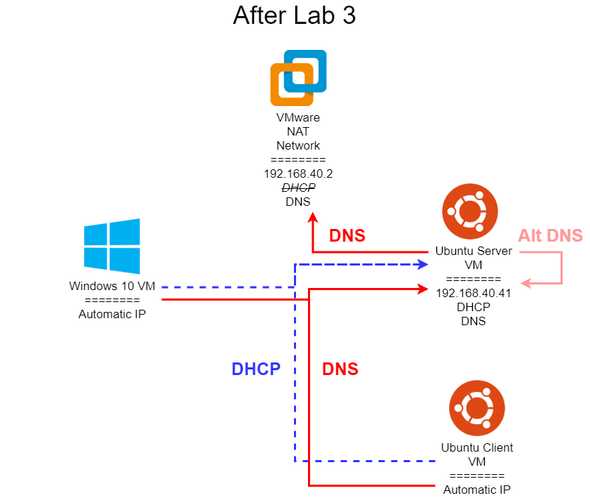
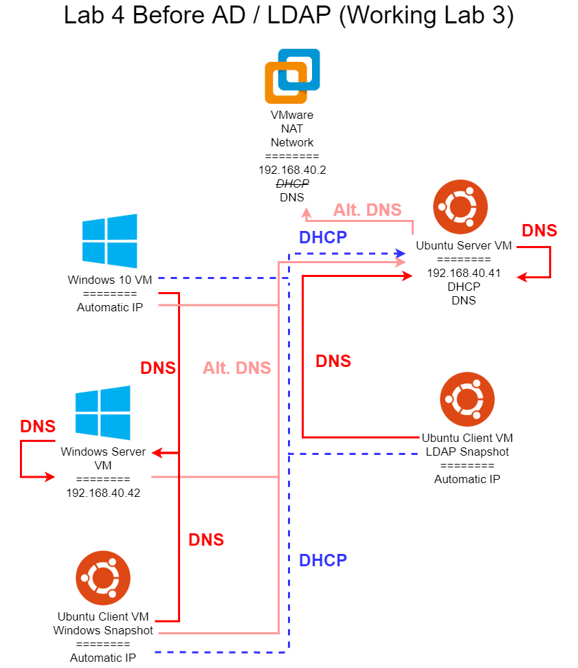
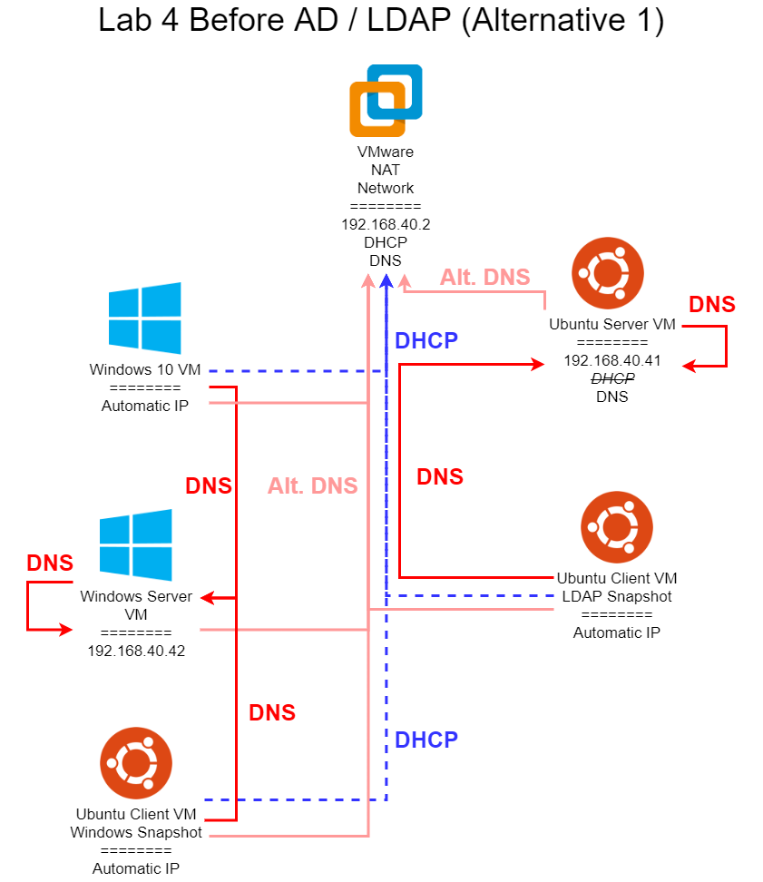
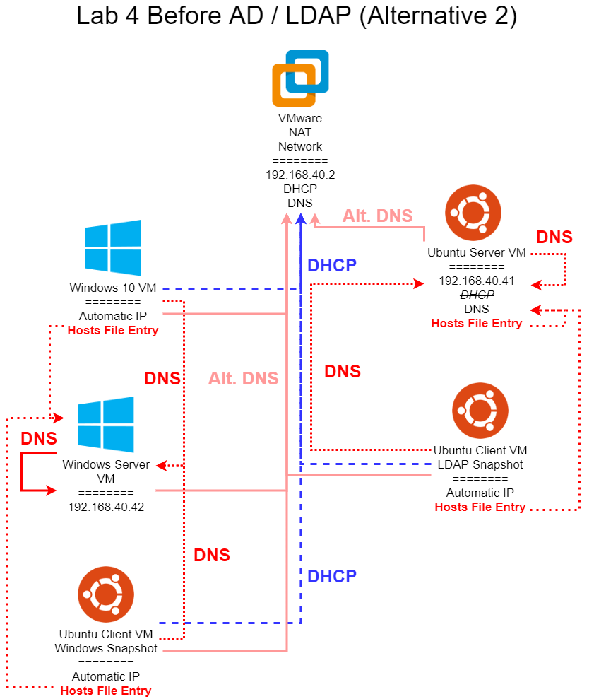

Here are some helpful networking diagrams to better explain the desired state before and after the end of Lab 4. In all of these diagrams, I am using a sample network with the IP address 192.168.40.0. You will have to adapt the IPs to match your network configuration. In addition, each network address will need to be updated with your unique eID as directed in the lab assignment.

Once you’ve completed all of Lab 3, your network diagram should resemble the one shown above. Recall that all systems are currently configured to get DHCP and DNS information from your Ubuntu VM labelled Server, so in general it must be running at all times for this network to function. In addition, the Ubuntu VM labelled Server does not use itself for DNS, but still uses the VMare built-in DNS server, though you may have configured an alternate entry so it can refer to itself for DNS as well. This is the most likely starting point for this lab if you completed Lab 3.

This diagram shows what an ideal network setup would look like, provided you have a working Lab 3 solution. In Lab 4, most of the changes required to get from the final Lab 3 network to this configuration are spread across multiple tasks. However, here are the major highlights:
ldap.cis527<your eID>.cs.ksu.eduldap.cis527<your eID>.cs.ksu.edu192.168.40.42 and a primary static DNS entry pointing to itself, with an alternate entry set to the Ubuntu Server VM or the VMware DNS server (Lab 4, Task 2). Once the Active Directory server is installed, it should be able to resolve ad.cis527<your eID>.cs.ksu.edu.ad.cis527<your eID>.cs.ksu.edu.ad.cis527<your eID>.cs.ksu.edu.This is the ideal setup for a this lab, but it depends on a fully working Lab 3 solution. In addition, you’ll need to keep the Ubuntu Server VM running at all times, which may present a problem on systems that struggle to run multiple VMs concurrently. So, below I discuss two alternative options.

In this diagram, we are bypassing the DHCP server configured in Lab 3, and reverting our network back to using the VMware DHCP server. In addition, we are avoiding using our own DNS server running on the Ubuntu Server VM unless absolutely necessary. So, the following changes are made to the network from Lab 3:
sudo systemctl disable isc-dhcp-server. Must still be able to resolve ldap.cis527<your eID>.cs.ksu.eduldap.cis527<your eID>.cs.ksu.edu192.168.40.42 and a primary static DNS entry pointing to itself, with an alternate entry set to the the VMware DNS server (Lab 4, Task 2). Once the Active Directory server is installed, it should be able to resolve ad.cis527<your eID>.cs.ksu.edu.ad.cis527<your eID>.cs.ksu.edu.ad.cis527<your eID>.cs.ksu.edu.In effect, each system that is getting automatic IP addresses is now using the VMware DHCP server. However, since that DHCP server does not give the correct DNS addresses, we must set static DNS entries on everything, with the Ubuntu Server VM and Ubuntu Client VM pointing to the DNS server running on the Ubuntu Server VM, and the Windows Server, Windows 10 Client, and the Ubuntu Client VM’s Windows Snapshot pointing to the DNS server running on the Windows Server (after Active Directory is installed). In addition, each of those systems should have an alternate DNS entry that points to the VMware DNS server, allowing them to still access the internet properly.
However, if you are still having issues with your DNS entries or DNS servers not working correctly, fear not! There is one more alternative option available to you.

In this diagram, we are bypassing the DHCP server configured in Lab 3, and reverting our network back to using the VMware DHCP server. In addition, we are avoiding using our own DNS server running on the Ubuntu Server VM unless absolutely necessary. Finally, we are adding entries to the hosts file on each system to bypass DNS completely, ensuring that we can still complete this lab even if our DNS systems are not working at all. So, the following changes are made to the network from Lab 3:
sudo systemctl disable isc-dhcp-server. Must still be able to resolve ldap.cis527<your eID>.cs.ksu.edu. If it cannot, add an entry to the /etc/hosts file that links 192.168.40.41 to ldap.cis527<your eID>.cs.ksu.edu.ldap.cis527<your eID>.cs.ksu.edu. If it cannot, add an entry to the /etc/hosts file that links 192.168.40.41 to ldap.cis527<your eID>.cs.ksu.edu.192.168.40.42 and a primary static DNS entry pointing to itself, with an alternate entry set to the the VMware DNS server (Lab 4, Task 2). Once the Active Directory server is installed, it should be able to resolve ad.cis527<your eID>.cs.ksu.edu. If it cannot, you are better off just rebuilding your AD server - this should always work on a working AD server!ad.cis527<your eID>.cs.ksu.edu. If it cannot, add an entry to the C:\Windows\System32\drivers\etc\hosts file that links 192.168.40.42 to ad.cis527<your eID>.cs.ksu.edu.ad.cis527<your eID>.cs.ksu.edu. If it cannot, add an entry to the /etc/hosts file that links 192.168.40.42 to ad.cis527<your eID>.cs.ksu.edu.In essence, we still configure each system with the correct static DNS entries. However, as a fallback in case those DNS entries are not working properly, we can use entries in the hosts file to bypass DNS completely and guarantee that we’re always going to get to the correct system.
This is a very useful workaround, and while an ideal network in the real world shouldn’t require it, many times system administrators include entries in the hosts file to ensure that systems can still be used in the event of DNS failure. Otherwise, an innocuous DNS failure could prevent users from even logging on to the system, either via LDAP or Active Directory.
As shown in the diagram above, the only DNS entry that must work is the Windows Server VM must be able to use itself for DNS. If that does not work, then most likely your Active Directory configuration failed and you will need to try again. Windows Active Directory relies heavily on DNS to function properly. I’ve not ever had this happen in my experience, so I highly doubt this failure case will be common.
You can find more information about how to edit your hosts file at this resource.